Before you buy
The listing tells half the story.
Buying a used car, phone or appliance? Kriko shows known problems with the exact model, beside the listing, with sources you can open and questions to ask the seller.
- Free and open source, no account
- Catalogs work offline, no AI key
- Watch the 28-second demo or follow the setup steps
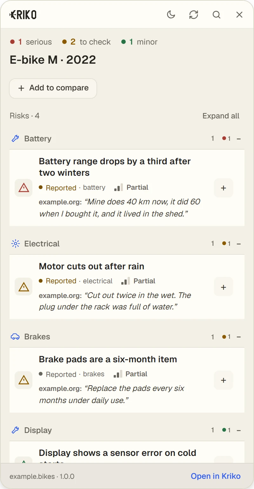
- A source beside every finding
- Your research stays on your computer
- Free and open source
The film
Twenty-eight seconds, with sound.
Kriko checking an invented e-bike listing, from opening the page to the sourced findings. Press play; the film does not start on its own.
01How it works
Three steps, on the page you are reading.
-
01
Open a product page.
Kriko reads the page on your computer and looks that exact product up in your catalogs. Nothing leaves your computer.
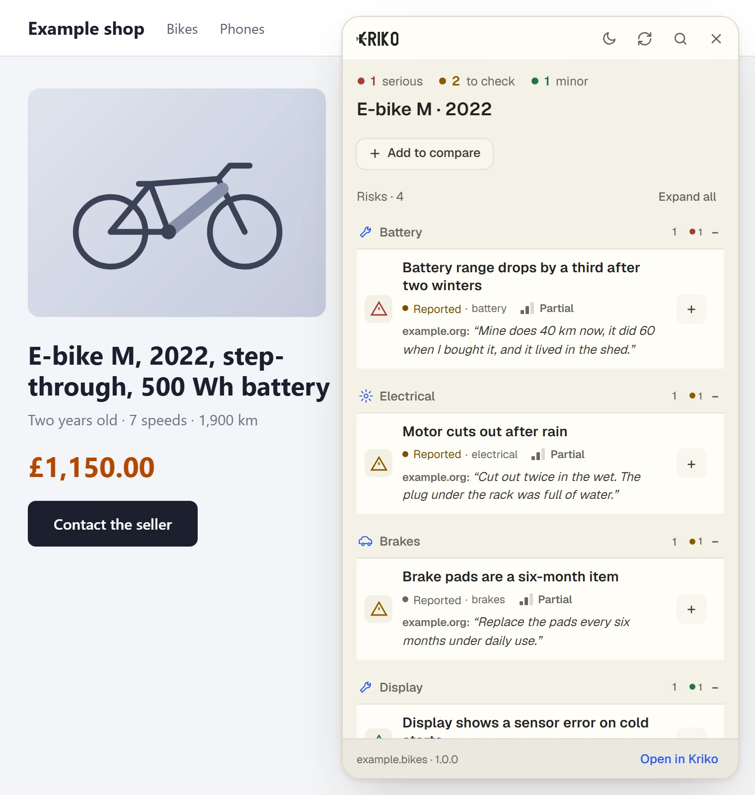
-
02
Read what to check.
Each finding says how serious it is, how well it is supported and what to ask. Open one to see its source.
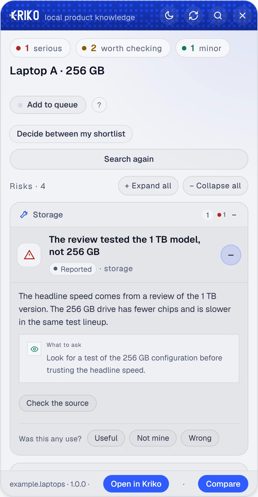
-
03
Compare, then decide.
Add the products you are torn between. The panel counts what is known to go wrong with each, and the app lines them up side by side.
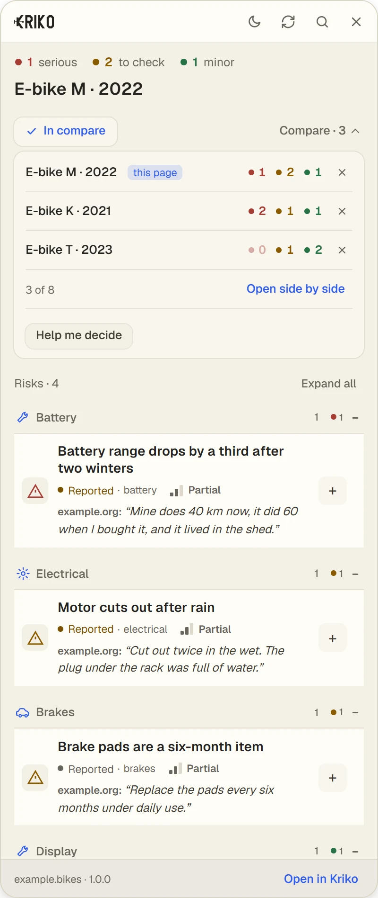
02The app
Where the findings are kept.
The Windows app keeps every check on your computer, lines your shortlist up side by side and answers your follow-up questions with sources. The panel in your browser is the way in.
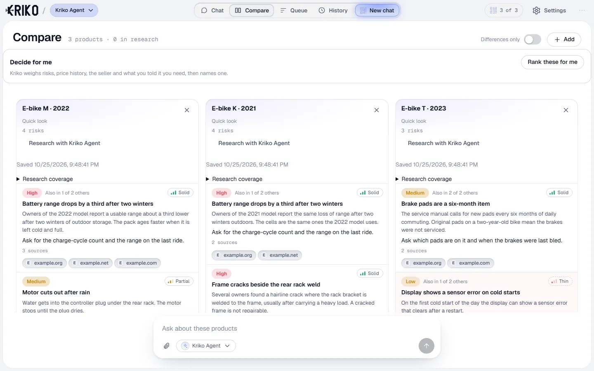
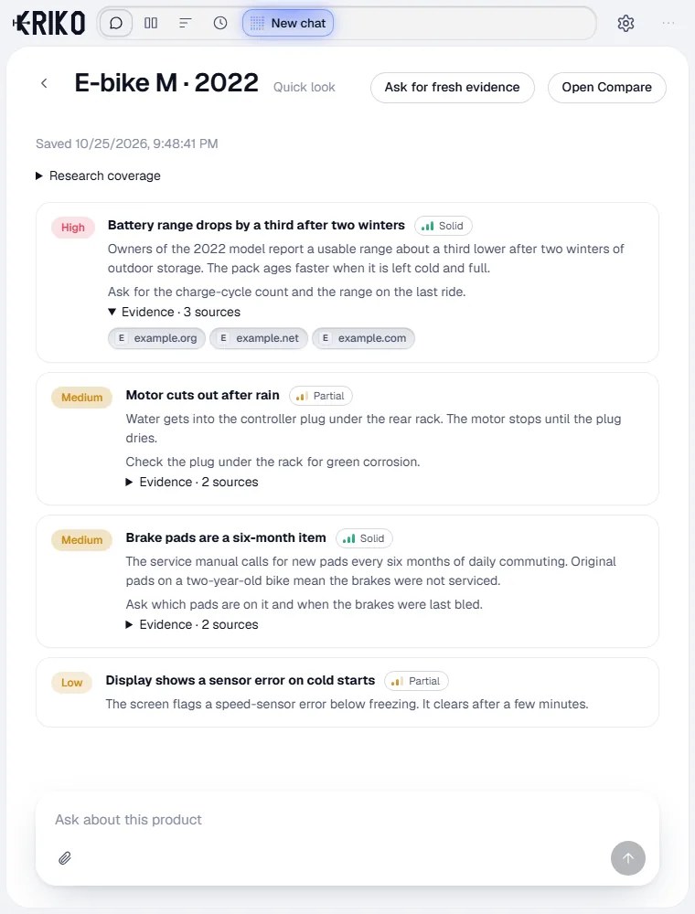
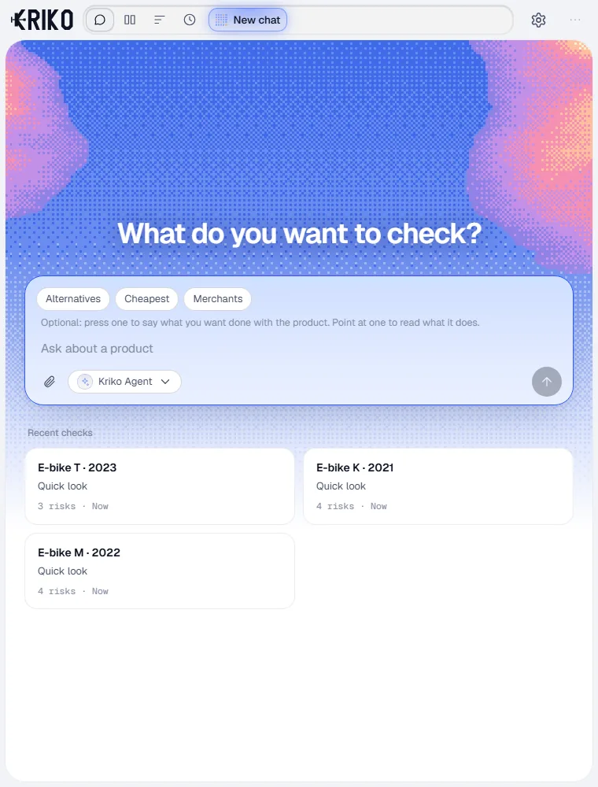
Every product here is invented, and so is every finding. The app is in English for now.
03Examples
Four invented products, in the real panel.
Nothing here is real, not the products and not the findings. They only show how the panel reads. Real findings link to a real source.
-
New · Robot vacuum
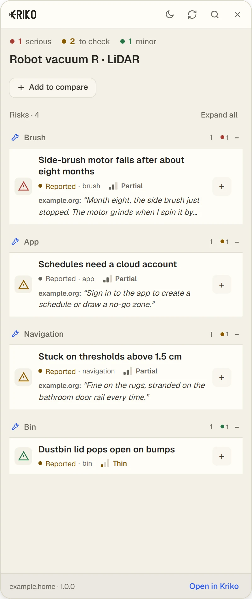
Robot vacuum R
A brush motor that gives up and an app that wants an account.
-
Used · Phone
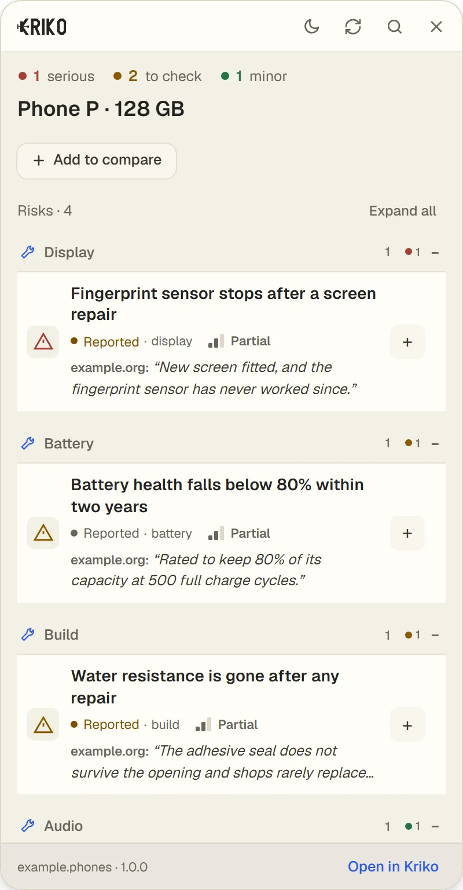
Phone P, 128 GB
A screen repair that can end the fingerprint sensor.
-
Used · Washing machine
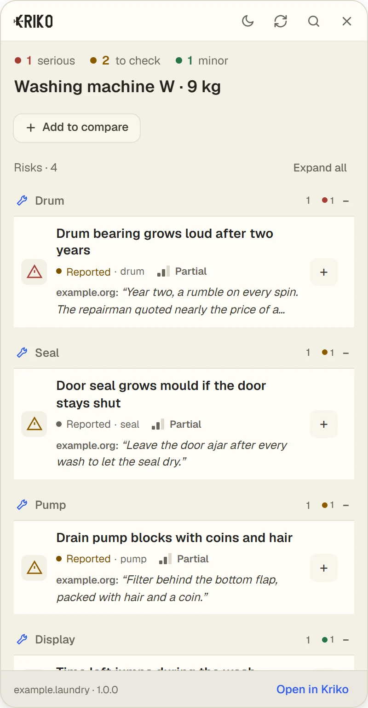
Washing machine W
A bearing that grows loud and a seal that grows mould.
-
New · Cordless drill
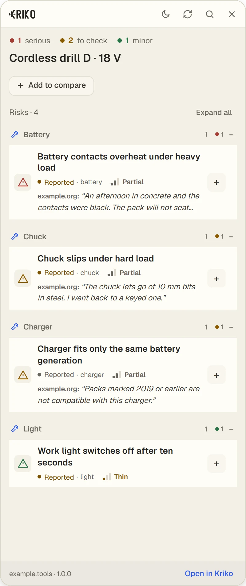
Cordless drill D
Contacts that overheat and a chuck that lets go.
The panel is in English for now. The Turkish site describes it in Turkish.
Read real, sourced findings on the known-problems pages — no app needed.
04Catalogs
Know the model before you buy.
A catalog is one product category, written down with its sources. There are catalogs for cars, phones, laptops, TVs, game consoles, kitchen and laundry appliances and more, in English and Turkish. Install one from Catalogs in the app and lookups work offline.
You do not need the app to read them: browse the known problems by product and part.
06Quick look
No catalog? Ask your agent.
Quick look sends the agent you chose to research a product no catalog covers, and keeps the sources. It needs an internet connection. If it finds nothing, Kriko says so. It never says a product is fine.
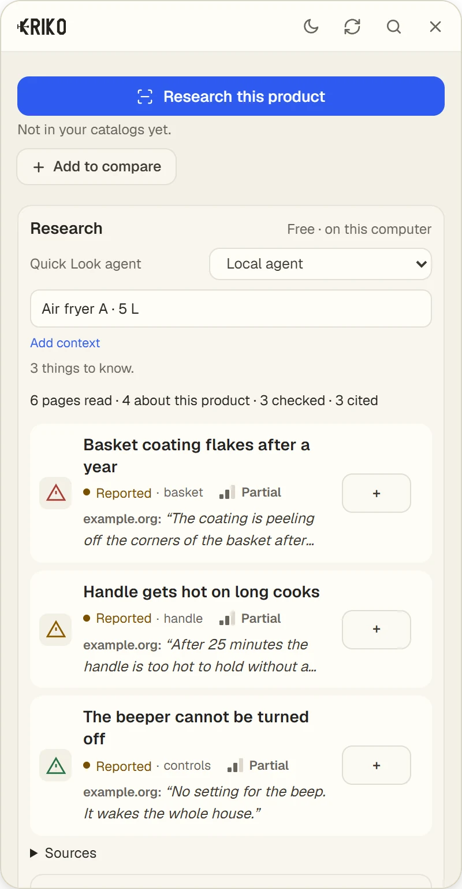
05On your phone
Ask from the shop, or scan the screen in front of you.
The Android app is the agent alone: ask about a product, photograph a listing, or let the floating scanner read the page you are on. Every answer cites the pages it read, in English or Turkish. It runs on API keys, so there is no agent to install on the phone.
-
Ask
One question, in either language.
-
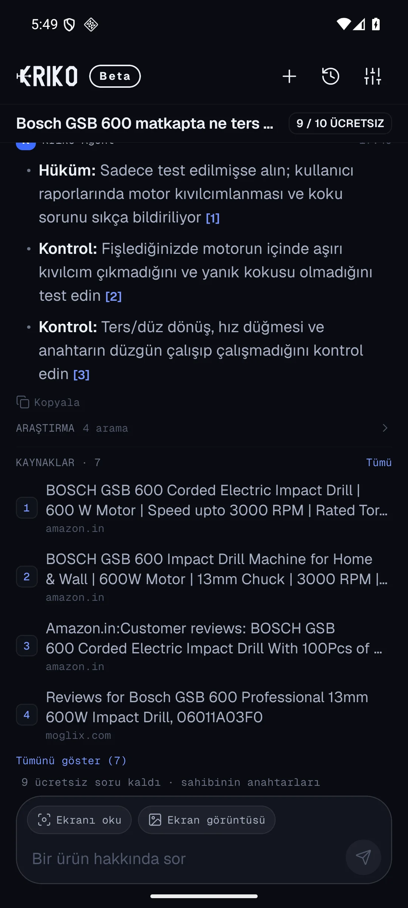
Answer with sources
The numbered pages sit under the answer.
-
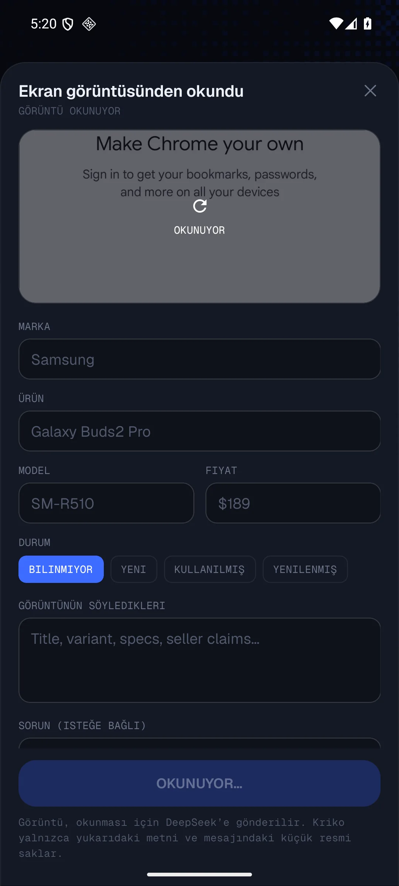
Read the listing
A photo becomes editable text first; you confirm before anything is researched.
-
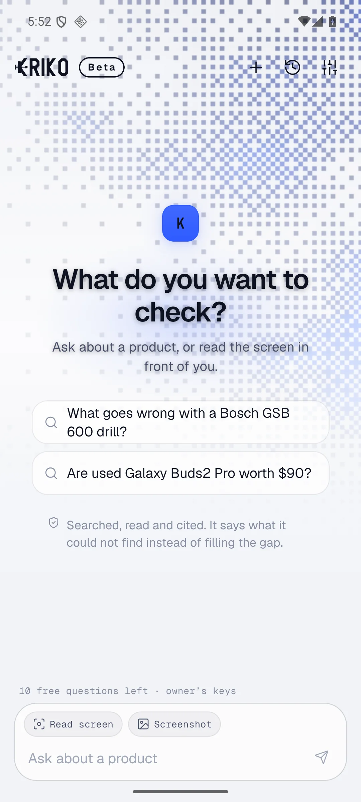
Dark, paper or white
Three palettes and two languages, switched in settings.
The captures are from a Pixel-sized Android emulator, not a mock. The phone build is a friends-test APK, not yet on Google Play.
07Install
Four steps, once.
New to Kriko? The guide shows each step as a short film.
- 01
Install the app.
Download the Windows installer and open Kriko. It needs no administrator rights. The first-start setup walks you through the rest.
- 02
Choose how to check.
For offline lookups, open More → Catalogs → Find release catalogs and install a catalog. For online research, open More → Agents, choose an agent and press Check connection. Paid providers bill your own account; research works without a catalog.
- 03
Add Kriko to your browser.
Install Kriko from the Chrome Web Store in Chrome, Edge or Brave. The store handles updates. Keep the desktop app running; the extension needs it to work.
- 04
Open a listing.
Keep Kriko running, open a product page and press Alt + K or the toolbar button. Confirm the model and variant, then open a finding and follow its source. No findings means a gap in coverage, not proof the product is trouble-free.
Kriko for Windows
For 64-bit Windows. It installs for the current user and needs no administrator rights.
Download the installerThe installer is not code-signed yet, so Windows may show a SmartScreen warning. Choose More info, then Run anyway.
Prefer a portable version? Choose the .zip.
On macOS or Linux? See the source build options.
Read the source on GitHub.
Kriko for Android
The agent on a phone: ask, photograph a listing, or scan the screen in front of you. English and Turkish. Test build for friends, direct APK.
Get the APK and the access stepsAndroid will warn that the app is not from the Play Store; that is expected for a direct APK. Not on Google Play yet.
08Questions
Your data, the cost and the limits.
What is Kriko?
Kriko is a free, open-source product research app that shows known problems with an exact model and variant, with sources beside each finding. Use the desktop app and browser extension while shopping, or browse known problems by product without installing anything.
Does Kriko work offline?
Installed catalog lookups work offline and need no account or AI key. Research beyond those catalogs needs an internet connection and a connected agent. A paid provider bills your own account.
How do I check a product before buying?
Open its listing with Kriko running and use the browser extension. Confirm the exact model and variant, read the findings and open their sources. Use those reports to decide what to inspect or ask the seller. The step-by-step guide shows the process. No findings means a gap in coverage, not proof that a product is trouble-free.
Where does my research live?
On your computer. Catalogs, history, your shortlist and settings stay with you, and there is no account to create. Online research sends your question and the pages it read to the provider you choose. Read the privacy policy for every case.
What is the catch?
Kriko is free and open source under the MIT license. Catalog lookups need no key. If you choose a paid AI provider for research, that provider bills your own account.
Can I check new products too?
Yes. New and used products both have problems that are easy to miss: owner reports, repair findings and concerns that only affect one variant. Quick look researches beyond your installed catalogs with your chosen agent.
What if a concern is not confirmed?
A report can point at something worth checking without proving a defect. Follow the pages behind it, compare the explanations and see what is still unanswered. You decide what the evidence means for your purchase.